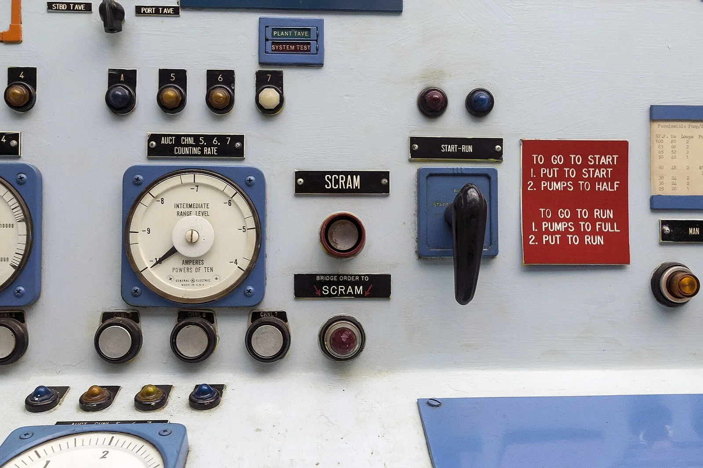
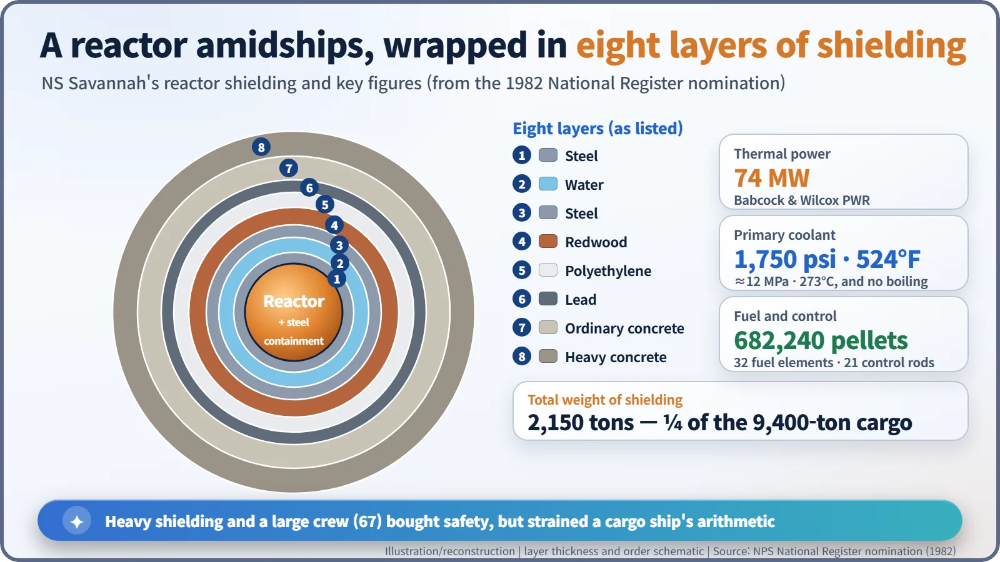
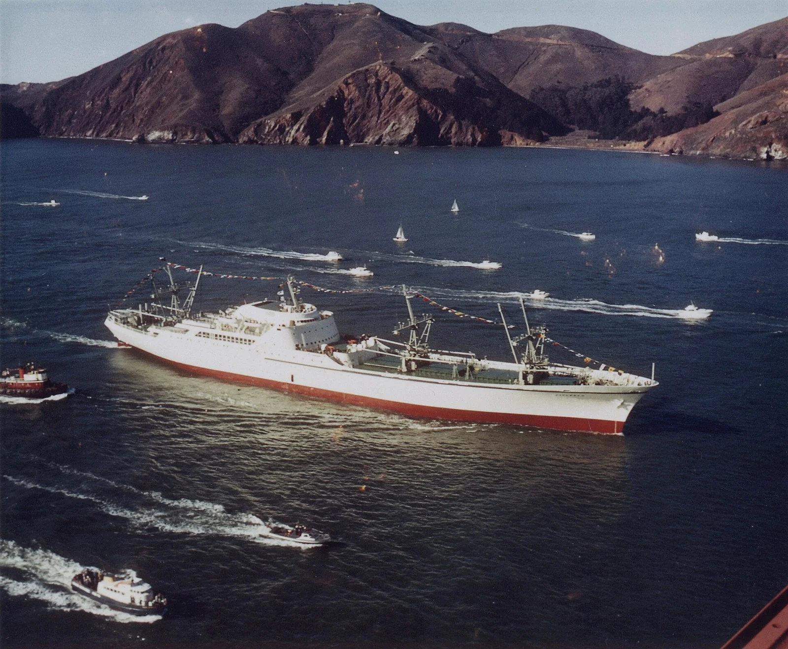
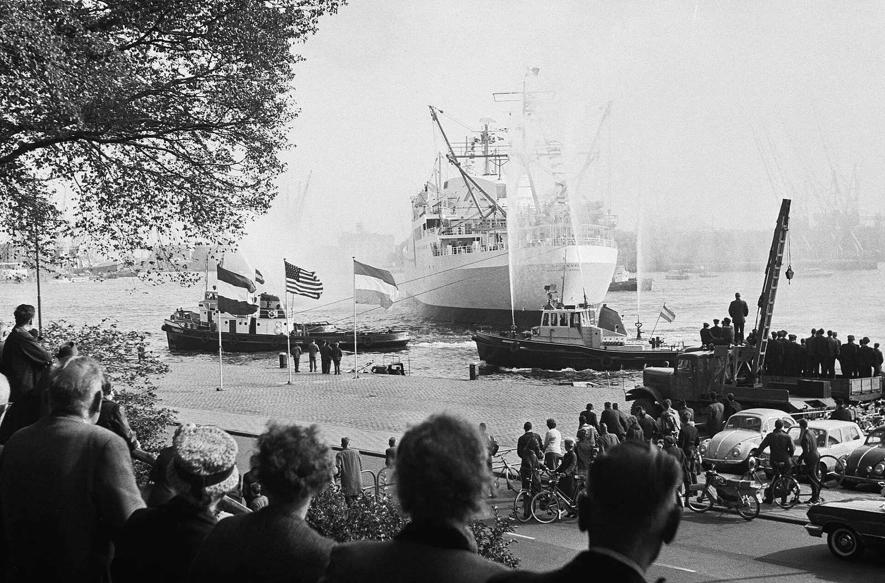

Nuclear History · 163
A Cargo Ship with a Swimming Pool and a Reactor — NS Savannah, the World's First Nuclear Merchant Ship
The world's first nuclear merchant ship passed the engineering test, but every port needed a treaty and the accounts never balanced.
NS Savannah, launched on 21 July 1959 and sent on her first demonstration voyage in August 1962, was the world's first nuclear-powered merchant ship: a 74-megawatt pressurized-water reactor, eight layers of shielding, and cabins for 60 passengers with a swimming pool. She proved that a reactor could drive a ship safely, but small holds, an expensive crew and the need for a liability treaty with almost every port kept her from paying her way. She stopped sailing in 1970, and her nuclear licence is still being wound up today.
A famous name, a new kind of engine
In 1819 an American ship called Savannah became the first vessel fitted with a steam engine to cross the Atlantic, even though she made most of the trip under sail. Some 140 years later, a new ship inherited the name and carried a nuclear reactor where her boilers would otherwise have been. She was the NS (Nuclear Ship) Savannah, the world's first nuclear-powered merchant ship. [5]
Why put a reactor in a cargo ship?
In 1955 President Dwight D. Eisenhower (1890–1969) proposed building a nuclear merchant ship, "as evidence of the nation's desire to use nuclear power peacefully." It was a way to show his "Atoms for Peace" programme at work on the open sea. In July 1956 Congress authorized the ship through Public Law 848, and the project was run jointly by the Maritime Administration (MARAD) and the Atomic Energy Commission (AEC). [1] [4]
The goal was unusual from the start. Savannah was never meant to make money. She was a demonstration ship: a test of whether nuclear power could work in commercial shipping, and a goodwill ambassador to the ports of the world.
A swimming pool and a reactor in the same hull
Her keel was laid on 22 May 1958 at the New York Shipbuilding Corporation yard in Camden, New Jersey, and she was launched on 21 July 1959 with First Lady Mamie Eisenhower as her sponsor. About 181 metres long, she had cabins for 60 passengers, air-conditioning, elevators and even a swimming pool. With her sleek white hull she looked more like a liner than a freighter.
The reactor core was installed on 11 November 1961, and on 21 December 1961 the reactor went critical for the first time, the point at which the chain reaction sustains itself. [1]
Water that does not boil, and eight layers of armour
Amidships sat a 74-megawatt (thermal) pressurized-water reactor designed and built by Babcock & Wilcox. The principle is a pressure cooker turned up to the extreme. The primary coolant, the water that cools the reactor directly, was held at 1,750 pounds per square inch (about 12 MPa), so it could reach 524°F (about 273°C) without boiling. That hot water then boiled water in a separate, lower-pressure loop, and the steam drove a De Laval turbine of up to 22,000 shaft horsepower.
The fuel came as 682,240 enriched uranium pellets packed into 32 fuel elements, and 21 boron-steel control rods regulated the chain reaction. In an emergency, a single SCRAM button could shut the reactor down within a second. [1]

The reactor sat inside a cylindrical steel containment vessel, wrapped in eight layers of shielding weighing 2,150 tons in all: steel, water, steel, redwood, polyethylene, lead, ordinary concrete and heavy concrete. That is roughly a quarter of the 9,400 tons of cargo her seven holds could carry. [1]

Every port needed a treaty
In August 1962 Savannah made her first demonstration voyage, to Savannah, Georgia. Later that year, bound for the Seattle World's Fair, she sailed beneath the Golden Gate Bridge. [1]

The bigger obstacle was finding harbours that would let her in. If something went wrong, who would pay? The United States answered by extending the principle of strict liability from its Atomic Energy Act, under which the operator pays without anyone having to prove fault, to the ship, and by negotiating a separate agreement with each host country. An agreement with the Netherlands was signed in February 1963; the British agreement of 1964 required prior government approval for each visit and allowed British authorities to monitor radiation while she was in port. A US government memo later called this liability guarantee "instrumental in achieving its entry into foreign ports." Some countries, reportedly including Japan and Australia, never let her in. [6]

Passed the engineering test, failed the accounts
From 1965 she entered experimental commercial service, mainly carrying cargo, and the numbers never added up. Her streamlined hull meant small holds that were awkward to load and unload, and her crew of 67, trained to run a reactor, was expensive. She was taken out of service in November 1970. By then she had sailed more than 450,000 nautical miles on about 163 pounds (roughly 74 kg) of uranium, and during her demonstration years alone some 1.4 million people had come aboard to look around. [5]
The 1982 National Register nomination put it fairly: as a technological experiment she was not expected to be an economic success, and she was not. "Technologically, however, it was a triumph." Germany's Otto Hahn and Japan's Mutsu followed, but nuclear merchant ships never entered the mainstream of commercial shipping. [1]
Eight years at sea, more than half a century of tidying up
Her fuel was removed in late 1971 (sources give October or December). From 1981 she spent about 13 years on display at a maritime museum in Charleston, South Carolina, and in 1991 she was made a National Historic Landmark, an exception to the usual rule that a site must be at least 50 years old.
Since 2008 she has been berthed in Baltimore, where decommissioning has steadily removed her nuclear plant. On 8 November 2022 her reactor pressure vessel left by rail for a disposal facility in Utah. The Nuclear Regulatory Commission (NRC) approved her licence termination plan on 30 January 2025, but as of October 2026 licence NS-1 is still in force, and the NRC expects the work to close by 2031. [2] [3]
![Timeline from 1955 to 2031 with the years after 1972 compressed: 1955 ship proposed, 22 May 1958 keel laid, 21 July 1959 launched, 21 December 1961 first criticality, August 1962 first voyage, 30 September 1964 Rotterdam, November 1970 out of service, late 1971 defueled, 1991 National Historic Landmark, 2008 to Baltimore, 8 November 2022 reactor vessel shipped out, 30 January 2025 NRC approves licence termination plan; bands mark demonstration service, commercial service, display in Charleston and decommissioning](../../assets/images/history/163-ns-savannah/fig2-lifeline.webp)
Savannah proved that a reactor could drive a ship safely. She also showed that a new technology needs more than engineering to go commercial: it needs a liability regime, ports willing to receive it, and a business case that pays.